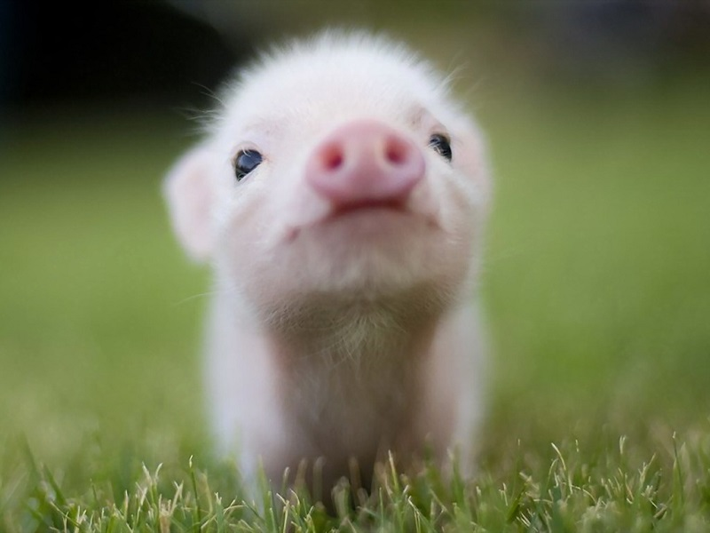

Неправильный ответ, все они милые
Ну вот и следующий экспонат!

Вот, надеюсь тебе понравятся звуки свинки
Ну и как тебе она, понравилась, разве она не милая? Если да то можешь проголосовать за нее. НО ПОСТОЙ! Сначала посмтори на
выдрочку.
Если что, голос тута